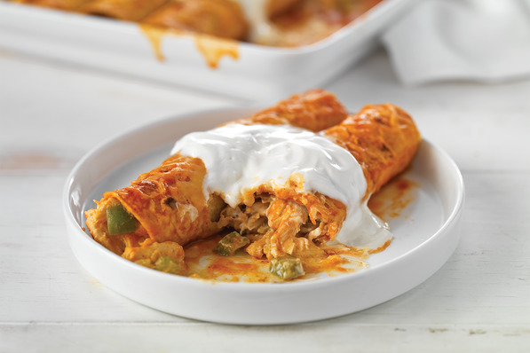

Add salt to a pot of water and bring it to a boil. Cook the pasta to al dente. Before draining, save a 1/2 of the pasta water.
While the pasta is cooking, cook the shrimp and sauce. Toss the shrimp, 3/4 of the cajun seasoning, and olive oil in bowl.
Over medium heat, melt the butter in a large skillet then add the shrimp. Cook the shrimp on each side for 3 minutes. Set the shrimp aside on a separate dish.
Reduce the heat to medium low and add the heavy cream to the pan.
Once it starts bubbling, lower the heat and stir in the rest of the cajun seasoning and Parmesan.
Once combined, add the pasta and shrimp and stir to coat.
If sauce is too thick, add pasta water one tbsp at a time.
Enchiladas
Ingredients

4 cups shredded chicken
2 tbsp taco seasoning
3 cups shredded mozzarella
3 cups shredded monterey jack cheese
1 cup sour cream
10 10" corn tortillas
1 28oz can green enchiladas sauce
Directions:
Preheat oven to 375F.
In a bowl, combine shredded chicken, 2 cups of mozzarella, 2 cups of monterey jack cheese, sour cream, and taco seasoning.
Heat up the tortillas.
In a pan, heat up the enchilada sauce.
Take a tortilla and dip it in the sauce. Fill the tortilla with the chicken filling and then roll tightly. Place the enchilada in a 9x13in baking dish. Continue to do this for every tortilla.
Pour the remaining enchilada sauce over the enchiladas. Then top with the remaining cheese.
Bake for 25 minutes or until the cheese is bubbling.
Chicken Fried Rice
Ingredients
1 lb of boneless skinless chicken breasts, diced
3 tablespoons butter, divided
2 eggs, whisked
2 medium carrots, peeled and diced
1 small white onion, diced
1/2 cup frozen peas
3 cloves garlic, minced
4 cups cooked and chilled rice
3 green onions, thinly sliced
3-4 tbsp soy sauce
2 tbsp oyster sauce
2 tsp toasted sesame oil
1 1/2 tsp canola oil
Directions:
Heat 1 1/2 tsp sesame oil and 1 1/2 tsp canola oil in a large skillet or wok. Once hot, add the chicken, season with salt and pepper and saute until fully cooked. Set the chicken aside in a seperate dish.
Heat 1/2 tablespoon of butter in until melted. Add egg, and cook until scrambled, stirring occasionally. Remove egg, and transfer to a separate plate.
Increase to high heat, stir in the remaining 1 1/2 tablespoons of butter until melted. Immediately add the rice, green onions, soy sauce and oyster sauce, and stir until combined.
Continue stirring for an additional 3 minutes. Then add in the eggs and chicken.
Remove from heat and stir in the sesame oil until combined.